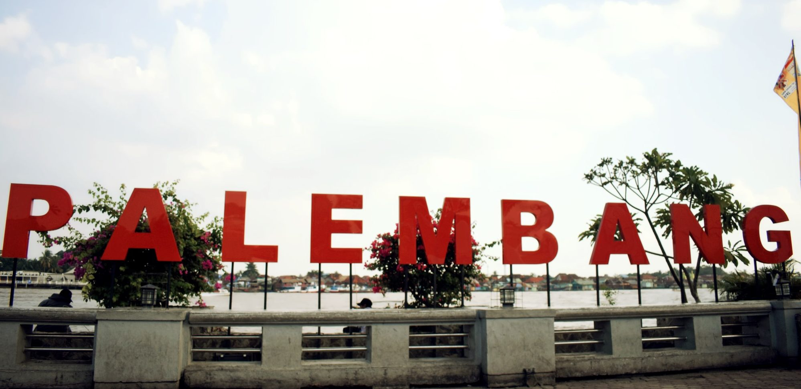
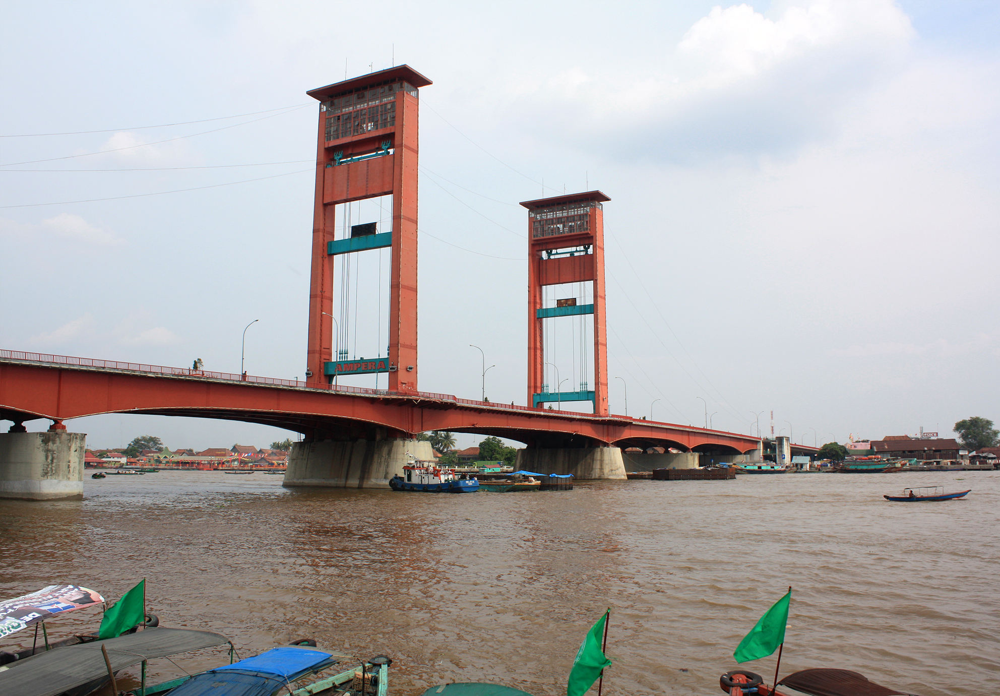
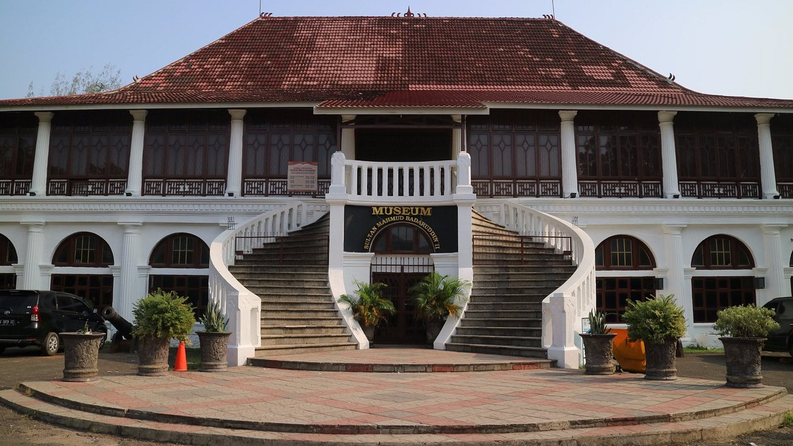
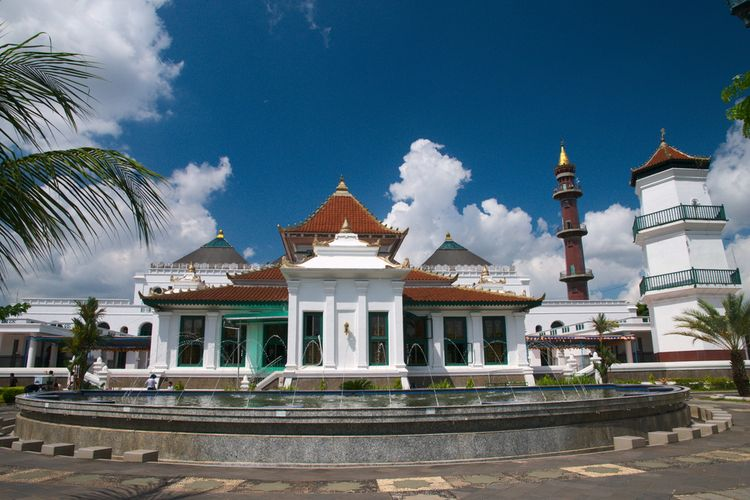
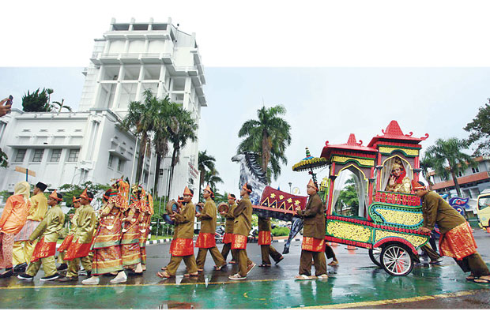
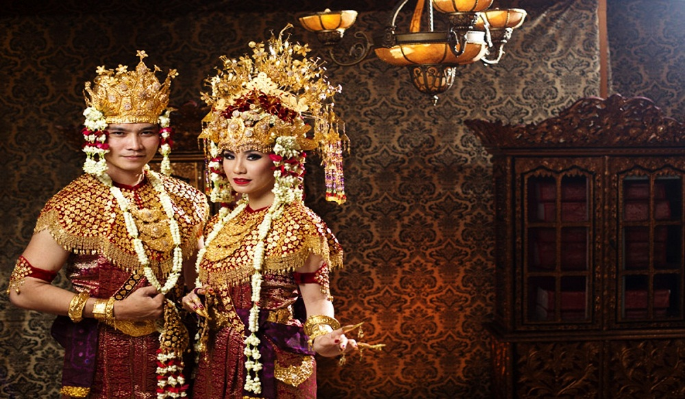
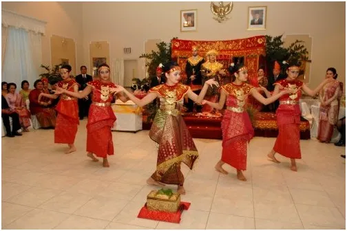

Sejarah

Kota Palembang merupakan kota tertua di Indonesia berumur setidaknya 1337 tahun jika berdasarkan prasasti
Sriwijaya yang dikenal sebagai prasasti Kedudukan Bukit. Menurut Prasasti yang berangka tahun 16 Juni 682.
Pada saat itu oleh penguasa Sriwijaya didirikan Wanua di daerah yang sekarang dikenal sebagai kota Palembang.
Menurut topografinya, kota ini dikelilingi oleh air, bahkan terendam oleh air. Air tersebut bersumber baik
dari sungai maupun rawa, juga air hujan. Bahkan saat ini kota Palembang masih terdapat 52,24 % tanah yang yang
tergenang oleh air (data Statistik 1990).
Berkemungkinan karena kondisi inilah maka nenek moyang orang-orang kota ini menamakan kota ini sebagai
Pa-lembang dalam bahasa melayu Pa atau Pe sebagai kata tunjuk suatu tempat atau keadaan; sedangkan lembang
atau lembeng artinya tanah yang rendah, lembah akar yang membengkak karena lama terendam air (menurut kamus
melayu), sedangkan menurut bahasa melayu-Palembang, lembang atau lembeng adalah genangan air. Jadi Palembang
adalah suatu tempat yang digenangi oleh air.
Geografis

Posisi geografis Palembang yang terletak di tepian Sungai Musi dan tidak jauh dari Selat Bangka. Hal ini
menjadi anugerah alam yang sangat menguntungkan. Walaupun tidak berada di tepi laut, Kota Palembang mampu
dijangkau oleh kapal-kapal dari luar negeri. Posisi kota ini cukup strategis karena dilalui oleh jalan Lintas
Sumatra yang menghubungkan antar daerah di Pulau Sumatra.
Wisata
Sejak lama kota Palembang sudah dikenal dengan jembatan Ampera yang merupakan landmark palembang. Jembatan ini
membentang membelah sungai Musi, tidak lengkap rasanya jika ke Palembang tapi tidak pernah melihat ataupun
berfoto di jembatan ikonik ini. Selain Jembatan Ampera, Palembang juga terkenal dengan objek wisata lainnya
yaitu:
Museum Sultan Mahmud Badarudin II

Lokasi museum ini awalnya adalah lokasi Kuta Lama, istana tua Sultan Mahmud Badaruddin I (1724-1758),
penguasa Kesultanan Palembang. Setelah penghapusan Kesultanan Palembang, istana Kuta Lama dihancurkan oleh
pemerintah kolonial Inggris pada 7 Oktober 1823.
Benteng Kuto Besak

Benteng Kuto Besak terletak di bagian tenggara dari Sungai Musi. Bentuk benteng adalah persegi panjang.
Ukurannya adalah 288,75 meter x 183,75 meter. Benteng Kuto Besak awalnya merupakan bangunan keraton yang
pada abad XVIII menjadi pusat Kesultanan Palembang. Benteng ini mulai dibangun pada tahun 1780 dengan
arsitek yang tidak diketahui dengan pasti dan pelaksanaan pengawasan pekerjaan dipercayakan pada seorang
Tionghoa.Pembangunan dan penataan kawasan di sekitar Plaza Benteng Kuto Besak diproyeksikan akan menjadi
tempat hiburan terbuka yang menjual pesona Musi dan bangunan-bangunan bersejarah.
Masjid Agung Palembang

Masjid Agung Sultan Mahmud Badaruddin I Jayo Wikramo adalah sebuah masjid paling besar di Kota Palembang.
Masjid ini didirikan pada abad ke-18 oleh Sultan Mahmud Badaruddin I Jayo Wikramo. Masjid ini dipengaruhi
oleh 3 arsitektur yakni Melayu, China dan Eropa. Gaya khas arsitektur Nusantara adalah pola struktur
bangunan utama berundak tiga dengan puncaknya berbentuk limas. Undakan ketiga yang menjadi puncak masjid
atau mustaka memiliki jenjang berukiran bunga tropis. Mengingat Masjid Agung Palembang merupakan salah satu
peninggalan sultan, maka berdasarkan Keputusan Menteri Agama Republik Indonesia MA/233/2003 tertanggal 23
Juli 2003, masjid ini ditetapkan sebagai salah satu masjid nasional. .
Kebudayaan

Palembang merupakan salah satu kota yang telah ada sejak zaman kuno di Sumatra yang berperan penting utamanya dalam bidang perdagangan dalam kawasan Asia Tenggara. Pada awal abad ke-6, sebuah kemaharajaan bernama Sriwijaya lahir di Palembang yang mengindikasikan bahwa masyarakat Palembang merupakan masyarakat yang memiliki mutu peradaban yang tinggi.
Pakaian Adat

Aesan adalah pakaian adat etnis Melayu Palembang. Aesan memiliki beberapa macam jenis, yang paling populer adalah Aesan Gede dan Aesan Paksangko atau siebut juga Aesan Pasangkong. Pada zaman dahulu, Aesan hanya dikenakan oleh para bangsawan atau anggota keluarga kerajaan Palembang (Wong Jero/Wong Jeroo), namun pada masa kini masyarakat umum Palembang (Wong Jabo) juga dapat mengenakannya sebagai simbol budaya Melayu Palembang.
Makanan Tradisional
Pempek atau dalam bahasa Indonesia gaul empek-empek, adalah makanan khas Palembang, Sumatera Selatan. Proses pembuatannya yakni dibuat dari daging ikan yang digiling lembut, dicampur tepung kanji atau tepung sagu, serta dengan penambahan komposisi bahan lain seperti telur, bawang putih yang dihaluskan, penyedap rasa, dan garam. Pempek biasanya disajikan dengan kuah yang disebut cuko yang memiliki rasa asam, manis, dan pedas.
Kesenian

Gending Sriwijaya merupakan lagu dan tarian tradisional masyarakat Kota Palembang, Sumatera Selatan. Melodi lagu Gending Sriwijaya diperdengarkan untuk mengiringi Tari Gending Sriwijaya. Baik lagu maupun tarian ini menggambarkan keluhuran budaya, kejayaan, dan keagungan kemaharajaan Sriwijaya yang pernah berjaya mempersatukan wilayah Barat Nusantara.